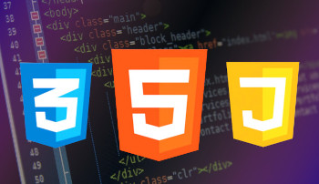

Front End
O Front-End é a parte do desenvolvimento web responsável pela interface visual e interativa de um site ou aplicativo. É tudo o que o usuário vê e com o que interage, como botões, menus, imagens e animações. Ele conecta o design ao código, criando experiências dinâmicas e intuitivas. Os desenvolvedores front-end utilizam tecnologias como HTML (estrutura da página), CSS (estilo e layout) e JavaScript (interatividade) para transformar designs em interfaces funcionais. Além disso, frameworks como React, Angular e Vue.js são amplamente usados para criar aplicações mais robustas e organizadas.
